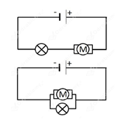
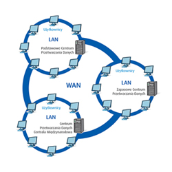
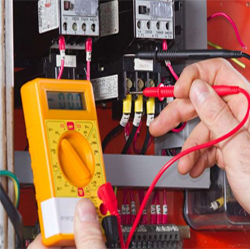
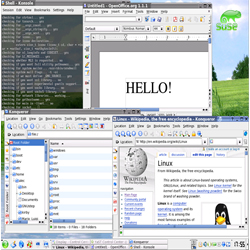
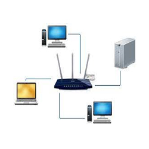

Technik teleinformatyk
Teleinformatyka jest połączeniem dwóch kierunków: informatyki i telekomunikacji. Systemy teleinformatyczne są wykorzystywane m.in. w inteligentnych budynkach, administracji czy bankowości.
Masz dobre zdolności manualne? Jesteś samodzielny i komunikatywny? Lubisz uczyć się nowych rzeczy? Interesujesz się informatyką, elektroniką lub telekomunikacją?
Jeśli tak, to jest to kierunek dla ciebie!
Podstawy elektrotechniki i elektroniki

Na tych zajęciach nauczysz się podstawowej terminologii stosowanej w elektronice i elektrotechnice, dowiesz się również, jak wykonywać obliczenia na różnego rodzaju obwodach elektrycznych. Poznasz także wiele elementów układów elektronicznych.
Lokalne sieci komputerowe
Na tym przedmiocie nauczysz się m.in. jak konfigurować, obsługiwać, diagnozować, naprawiać i modernizować lokalne sieci komputerowe. Dowiesz się również jak projektować i montować okablowanie strukturalne.
Sieci rozległe

Na tych zajęciach będziesz się uczył o sieciach WAN. Poznasz podstawowe techniki pomiarowe dla mediów miedzianych, a także techniki transmisyjne łącza dostępowego. Nauczysz się również, jak zbudowane są światłowody.
Pomiary elektryczne i elektroniczne

Na tym przedmiocie będziesz badał obwody elektryczne prądu stałego i sinusoidalnego, a także projektował i montował cyfrowe i analogowe układy elektroniczne. Poznasz też elementy półprzewodnikowe i optoelektroniczne.
Administrowanie systemami operacyjnymi

Na tych zajęciach poznasz zasady instalacji i zabezpieczania systemów operacyjnych, a także sposoby ich konfiguracji. Dowiesz się m.in. jak zarządzać systemem wejścia-wyjścia, utworzyć kopię bezpieczeństwa i wykonywać podstawowe operacje na dyskach i partycjach
Administrowanie sieciami i urządzeniami sieciowymi

Na tych zajęciach poznasz zasady konfiguracji urządzeń sieciowych. Nauczysz się także, jak zainstalować oprogramowanie symulacyjne i diagnostyczne sieci LAN oraz jak zapewnić bezpieczeństwo w lokalnych sieciach komputerowych.